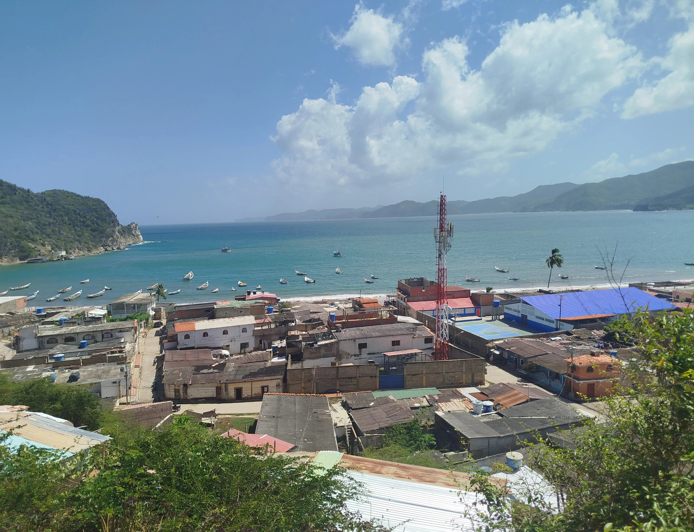
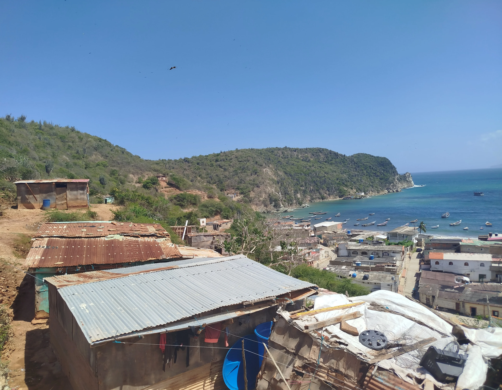
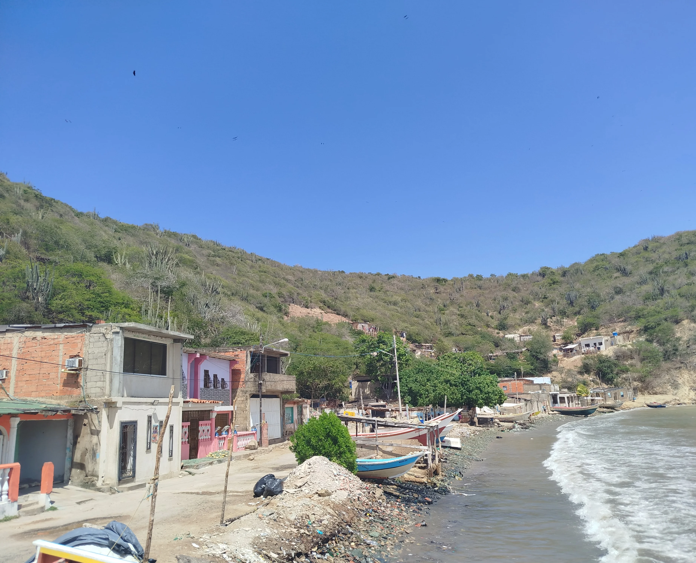
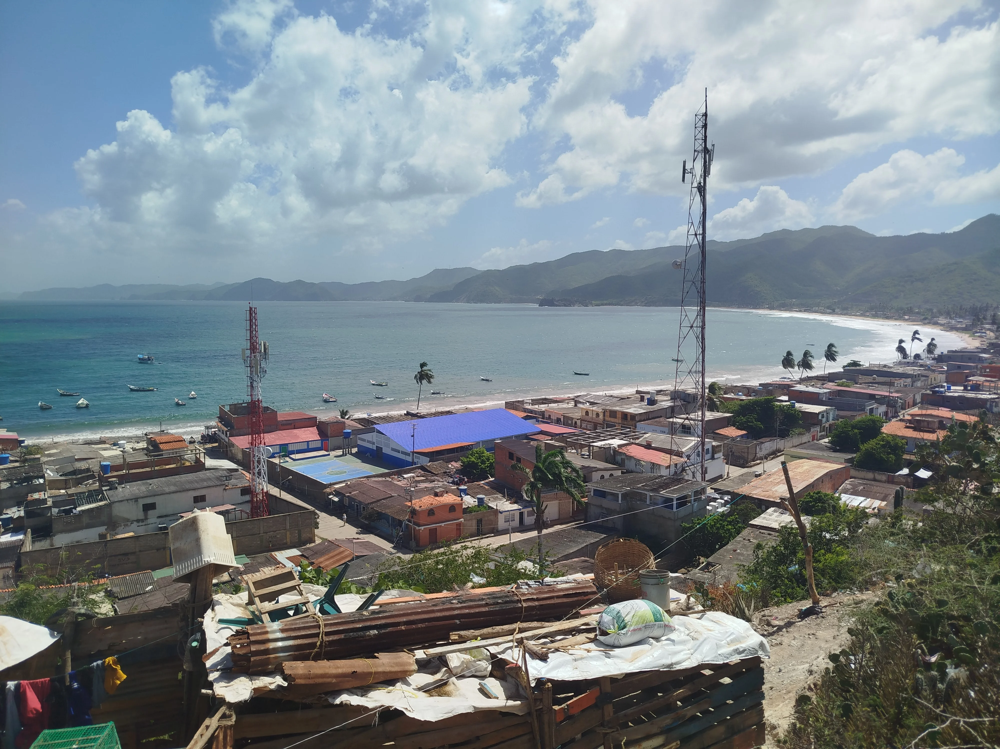
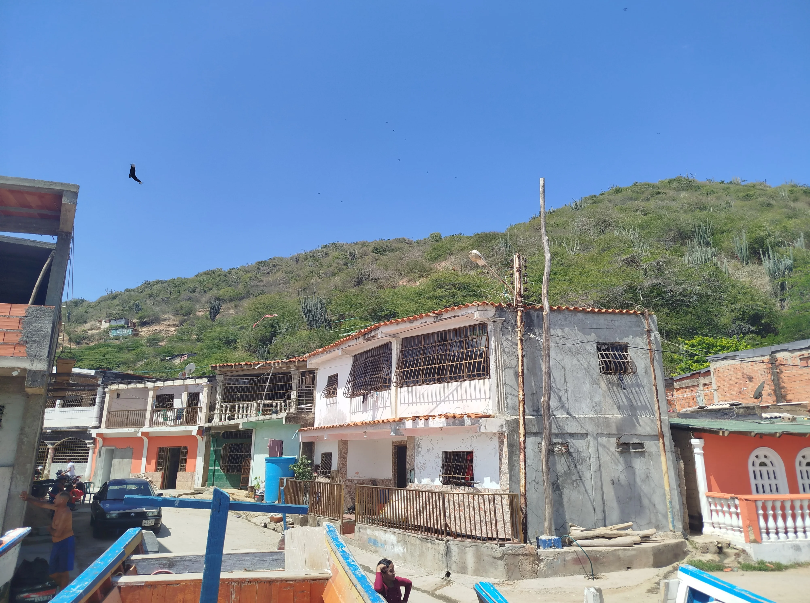
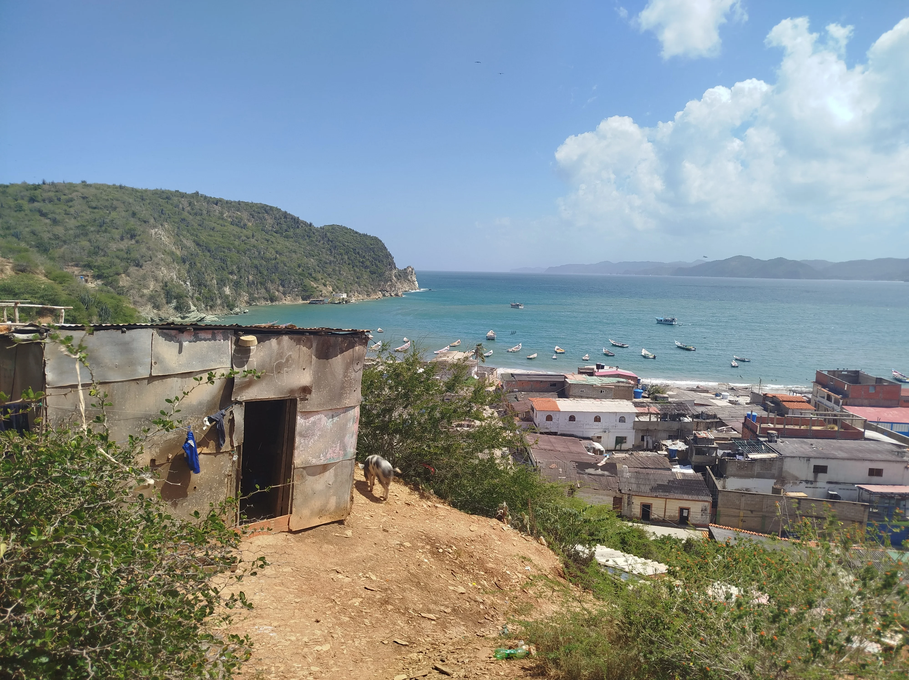

Desde la cima del Cerro de El Olivito, la vista de El Morro de Puerto Santo es realmente impresionante. El aire es seco y cálido, con ese toque salino que solo se siente en la costa. Mirando hacia abajo, se extiende una bahía protegida, donde el mar Caribe se encuentra con una línea de montañas verdes y secas. Las colinas están vestidas con vegetación espinosa y cactus, una belleza natural agreste que contrasta con el intenso azul del cielo. Es un lugar donde la montaña se funde directamente con el mar, creando un horizonte espectacular que te hace sentir que estás en un rincón apartado del mundo.




La población se aferra a la orilla del mar, con un caserío denso. Las casas, construidas muy cerca unas de otras, tienen techos de tejas y chapa, y fachadas con colores vivos y también con tonos más apagados, reflejando el carácter humilde y trabajador del pueblo. Las calles principales corren paralelas a la playa, y desde aquí arriba, se puede trazar fácilmente el camino que recorre la gente en su día a día. Aunque es un pueblo pequeño, la infraestructura de comunicación se eleva sobre el paisaje, con grandes antenas que conectan a la comunidad, recordándote que este es un lugar activo y conectado.

Cómo Llegar
Si tu interés es llegar al Cerro de El Olivito para disfrutar de las vistas panorámicas, la ruta implica tomar caminos. Siendo el recorrido por el sector El Olivito uno de los puntos principales o a través de el cerro de El Dique para acceder a la parte alta y tener una visión completa de la bahía.
Mejores Días
El mejor momento para ascender El Cerro El Olivito es en la Mañana para evitar el calor y obtener luz clara. Alternativamente, puedes ir en la tarde para un ascenso más fresco y capturar la puesta de sol sobre el mar.
¿Por Qué Visitarla?
ofrece la mejor vista panorámica de 360 grados de toda la región. Desde allí se puede apreciar el paisaje completo: la perfecta fusión del pueblo de pescadores con sus casas y numerosos botes, las montañas áridas y la inmensidad del mar Caribe, lo que lo convierte en el lugar ideal y esencial para la fotografía y para entender la geografía única de El Morro de Puerto Santo.
Cerro El Olivito
La vida en El Morro de Puerto Santo gira completamente en torno al agua. Al mirar la bahía, lo primero que llama la atención es la gran cantidad de botes: los peñeros. Están amarrados a lo largo de la costa, flotando tranquilamente o varados en la arena, todos esperando su turno para salir a pescar. Este es el corazón del pueblo. Se respira el ambiente de una comunidad que vive de la faena diaria del mar. Y si te fijas en los patios de las casas cerca de la orilla, no es raro ver gallinas, patos o polluelos caminando libremente; es una vida sencilla, rural y marinera a la vez, donde la naturaleza y el trabajo se mezclan sin esfuerzo.
Estar aquí te regala una paz profunda. Es una estampa clásica de la costa venezolana: sol fuerte, mar vibrante y una comunidad que ha construido su vida entre la aridez de la tierra y la abundancia del océano. El Morro de Puerto Santo es un lugar con carácter; un pueblo de pescadores auténtico y fotogénico, enmarcado por montañas y bendecido con un mar tranquilo. Es una visita obligada si buscas experimentar la vida costera real, lejos de los grandes resorts, donde el sol brilla sin descanso sobre un horizonte infinito.
